CHAPTER 04 / 中英对照
Total Store Order 与 x86 内存模型
Total Store Order and the x86 Memory Model
本章目录
原书第 39 页PDF 61
ENGLISHA widely implemented memory consistency model is total store order (TSO). TSO was first introduced by SPARC and, more importantly, appears to match the memory consistency model of the widely used x86 architecture. RISC-V also supports a TSO extension, RVTSO, in part to aid porting of code originally written for x86 or SPARC architectures. This chapter presents this important consistency model using a pattern similar to that in the previous chapter on sequential consistency. We first motivate TSO/x86 (Section 4.1) in part by pointing out limitations of SC. We then present TSO/x86 at an intuitive level (Section 4.2) before describing it more formally (Section 4.3), explaining how systems implement TSO/x86, including atomic instructions and instructions used to enforce ordering between instructions (Section 4.4). We conclude by discussing other resources for learning more about TSO/x86 (Section 4.5) and comparing TSO/x86 and SC (Section 4.6).
中文Total Store Order（TSO）是一种得到广泛实现的内存一致性模型。它最初由SPARC提出，更重要的是，它似乎与广泛使用的x86体系结构的内存一致性模型相符。RISC-V也支持TSO扩展RVTSO，部分目的是便于移植最初为x86或SPARC编写的代码。本章沿用上一章讨论顺序一致性的结构，介绍这一重要模型。首先说明TSO/x86的动机，并指出SC的一些局限（4.1节）；随后直观介绍TSO/x86（4.2节），再给出更正式的描述（4.3节），解释系统如何实现它，包括原子指令与用于保证指令间顺序的指令（4.4节）。最后介绍进一步学习TSO/x86的资料（4.5节），并比较TSO/x86与SC（4.6节）。
ENGLISH4.1 MOTIVATION FOR TSO/X86
中文4.1 TSO/x86的动机
ENGLISHProcessor cores have long used write (store) buffers to hold committed (retired) stores until the rest of the memory system could process the stores. A store enters the write buffer when the store commits, and a store exits the write buffer when the block to be written is in the cache in a read-write coherence state. Significantly, a store can enter the write buffer before the cache has obtained read-write coherence permissions for the block to be written; the write buffer thus hides the latency of servicing a store miss. Because stores are common, being able to avoid stalling on most of them is an important benefit. Moreover, it seems sensible to not stall the core because the core does not need anything, as the store seeks to update memory but not core state.
中文长期以来，处理器核使用写（store）缓冲区暂存已提交（退休）的 store，直到内存系统的其余部分能够处理它们。store 在提交时进入写缓冲区；当待写数据块已位于缓存中且具有读写缓存一致性状态时，store 离开缓冲区。关键在于，store 可以在缓存获得目标块的读写权限之前进入写缓冲区，从而隐藏处理 store 缺失的延迟。由于 store 非常常见，能够避免因大多数 store 而停顿，是一项重要优势。而且，让核继续执行也很合理，因为 store 旨在更新内存而非处理器核状态，核并不需要从该操作获得任何值。
ENGLISHFor a single-core processor, a write buffer can be made architecturally invisible by ensuring that a load to address A returns the value of the most recent store to A even if one or more stores to A are in the write buffer. This is typically done by either bypassing the value of the most recent store to A to the load from A, where “most recent” is determined by program order, or by stalling a load of A if a store to A is in the write buffer.
中文对单核处理器而言，只要确保对地址A的 load 返回最近一次对A的 store 值，即使写缓冲区中尚有一个或多个对A的 store，就可以使写缓冲区在体系结构层面对软件不可见。通常有两种实现方式：从写缓冲区将程序顺序中最近一次对A的 store 值旁路转发给 load，或者在缓冲区中存在对A的 store 时，暂停对A的 load。
ENGLISHWhen building a multicore processor, it seems natural to use multiple cores, each with its own bypassing write buffer, and assume that the write buffers continue to be architecturally invisible.
中文构建多核处理器时，一个自然想法是让每个核都拥有支持旁路转发的写缓冲区，并假定这些写缓冲区仍然在体系结构层面对软件不可见。
查看 原书第 39 页 的完整原版面（PDF 61）
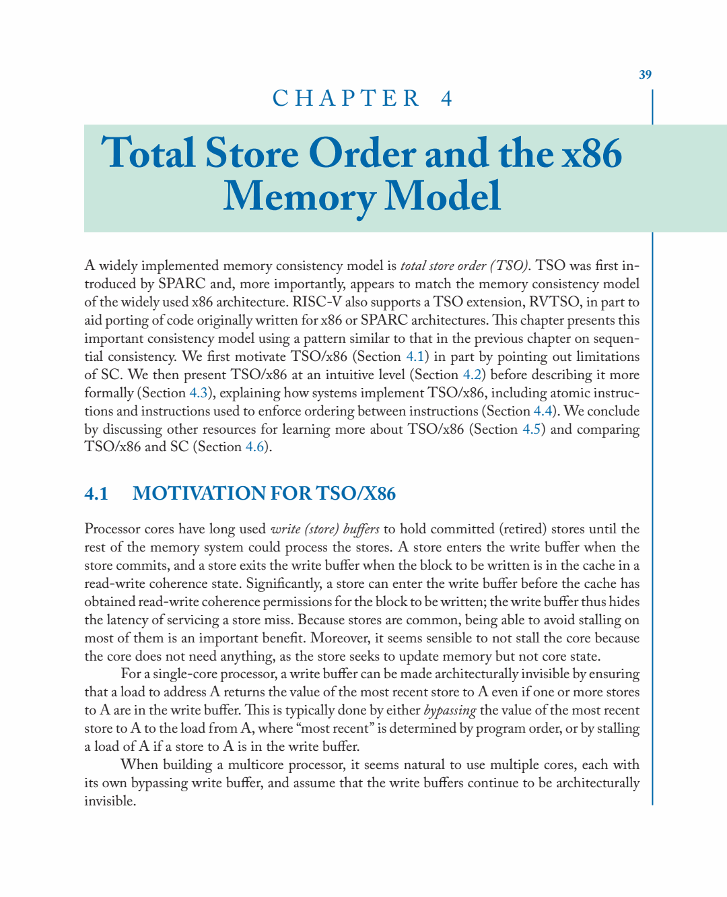
原书第 40 页PDF 62
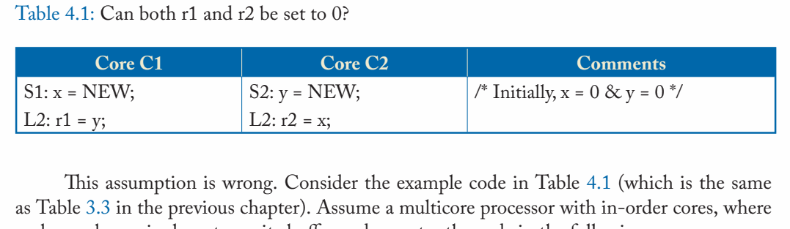
展开可搜索的英文文字
Core C1 Core C2 Comments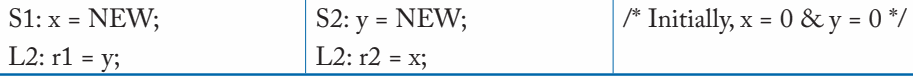
展开可搜索的英文文字
S1: x = NEW; S2: y = NEW; /* Initially, x = 0 & y = 0 */ L2: r1 = y; L2: r2 = x;ENGLISHThis assumption is wrong. Consider the example code in Table 4.1 (which is the same as Table 3.3 in the previous chapter). Assume a multicore processor with in-order cores, where each core has a single-entry write buffer and executes the code in the following sequence.
中文这一假设是错误的。考虑表4.1的代码，它与上一章表3.3相同。假设一个多核处理器采用顺序执行核，每个核有一个仅含单个表项的写缓冲区，并按以下过程执行。
ENGLISH• Core C1 executes store S1, but buffers the newly stored NEW value in its write buffer.
中文• 核C1执行 store S1，但将新值NEW暂存在其写缓冲区中。
ENGLISH• Likewise, core C2 executes store S2 and holds the newly stored NEW value in its write buffer.
中文• 同样，核C2执行 store S2，将新值NEW保留在其写缓冲区中。
ENGLISH• Next, both cores perform their respective loads, L1 and L2, and obtain the old values of 0.
中文• 接着，两核分别执行 load L1和L2，均取得旧值0。
ENGLISH• Finally, both cores’ write buffers update memory with the newly stored values NEW.
中文• 最后，两个核的写缓冲区才用新值NEW更新内存。
ENGLISHThe net result is that (r1, r2) = (0, 0). As we saw in the previous chapter, this is an execution result forbidden by SC. Without write buffers, the hardware is SC, but with write buffers, it is not, making write buffers architecturally visible in a multicore processor.
中文最终结果为(r1, r2) = (0, 0)。上一章已经说明，这是SC禁止的结果。没有写缓冲区时，该硬件满足SC；加入写缓冲区后则不满足。因此，在多核处理器中，写缓冲区变得对软件可见。
ENGLISHOne response to write buffers being visible would be to turn them off, but vendors have been loath to do this because of the potential performance impact. Another option is to use aggressive, speculative SC implementations that make write buffers invisible again, but doing so adds complexity and can waste power to both detect violations and handle mis-speculations.
中文一种应对方式是禁用写缓冲区，但厂商通常不愿这样做，因为可能损害性能。另一种选择是采用激进的推测式SC实现，使写缓冲区重新不可见；但这会增加复杂性，并可能在检测违规和处理错误推测时浪费功耗。
ENGLISHThe option chosen by SPARC and later x86 was to abandon SC in favor of a memory consistency model that allows straightforward use of a first-in–first-out (FIFO) write buffer at each core. The new model, TSO, allows the outcome “(r1, r2) = (0, 0).” This model astonishes some people but, it turns out, behaves like SC for most programming idioms and is well defined in all cases.
中文SPARC以及后来的x86选择放弃SC，采用一种允许每个核直接使用先进先出（FIFO）写缓冲区的内存一致性模型。这个新模型TSO允许(r1, r2) = (0, 0)。它可能令部分人感到意外，但实际上，对大多数常见编程方式而言，它表现得与SC相同，而且在所有情况下都有明确定义。
ENGLISH4.2 BASIC IDEA OF TSO/X86
中文4.2 TSO/x86的基本思想
ENGLISHAs execution proceeds, SC requires that each core preserves the program order of its loads and stores for all four combinations of consecutive operations:
中文执行过程中，SC要求每个核在以下四种相邻操作组合中，都保持 load 与 store 的程序顺序：

中文• load→load。

中文• load→store。

中文• store→store。
查看 原书第 40 页 的完整原版面（PDF 62）
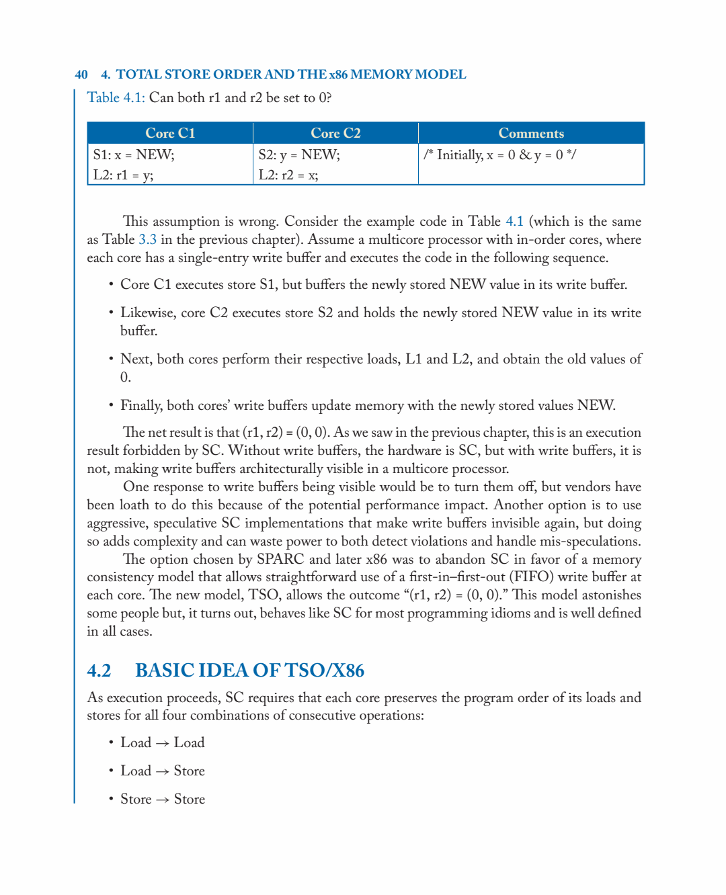
原书第 41 页PDF 63
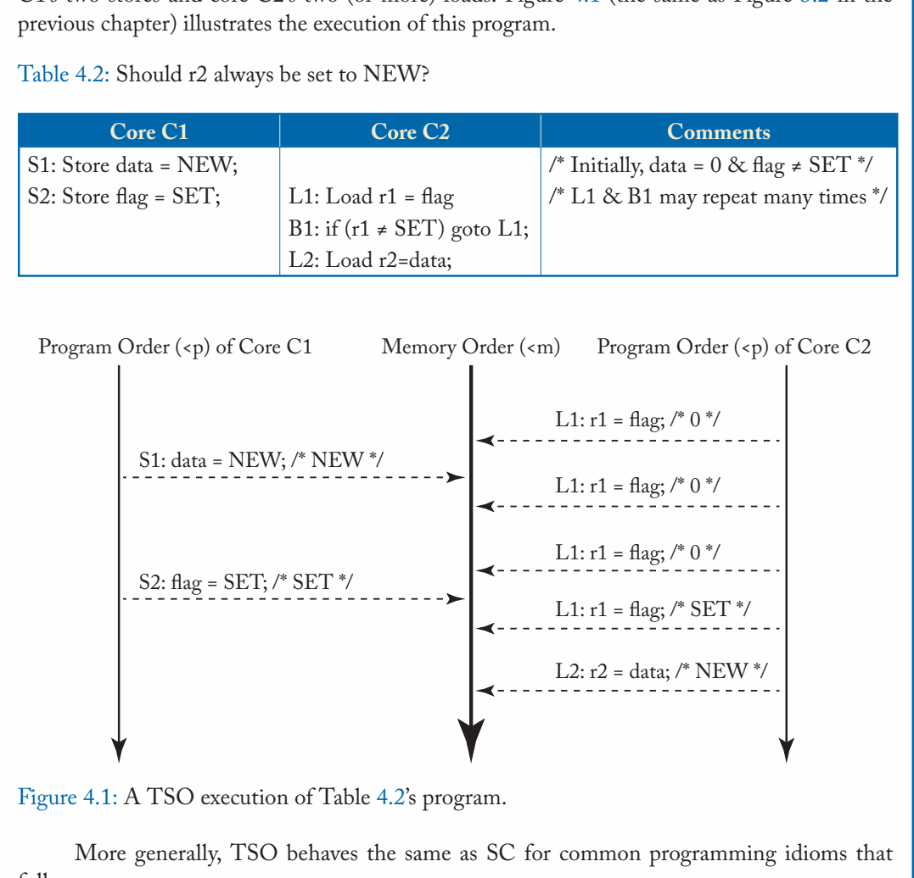
ENGLISH• Store Load /* Included for SC but omitted for TSO */ ! TSO includes the first three constraints but not the fourth. This omission does not matter for most programs. Table 4.2 repeats the example program of Table 3.1 in the previous chapter. In this case, TSO allows the same executions as SC because TSO preserves the order of core C1’s two stores and core C2’s two (or more) loads. Figure 4.1 (the same as Figure 3.2 in the previous chapter) illustrates the execution of this program.

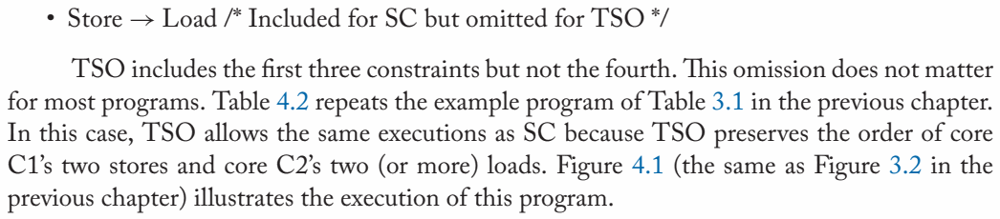
数学符号与上下标以此原版面为准中文• store→load。/* SC保留这一约束，TSO省略它。*/
TSO包含前三项约束，但不包含第四项。对于大多数程序，这一省略并无影响。表4.2重复上一章表3.1的示例。在此情形下，TSO与SC允许相同执行，因为TSO保持C1两次 store 的顺序，以及C2两次或更多 load 的顺序。图4.1与上一章图3.2相同，展示该程序的一次执行。
TSO包含前三项约束，但不包含第四项。对于大多数程序，这一省略并无影响。表4.2重复上一章表3.1的示例。在此情形下，TSO与SC允许相同执行，因为TSO保持C1两次 store 的顺序，以及C2两次或更多 load 的顺序。图4.1与上一章图3.2相同，展示该程序的一次执行。
展开可搜索的英文文字
Core C1 Core C2 Comments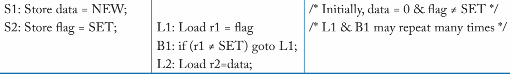
展开可搜索的英文文字
S1: Store data = NEW; /* Initially, data = 0 & fl ag ≠ SET */ S2: Store fl ag = SET; L1: Load r1 = fl ag /* L1 & B1 may repeat many times */ B1: if (r1 ≠ SET) goto L1; L2: Load r2=data;ENGLISHMore generally, TSO behaves the same as SC for common programming idioms that follow:
中文更一般地，对于遵循以下模式的常见程序，TSO与SC表现相同：
ENGLISH• C1 loads and stores to memory locations D1, . . ., Dn (often data),

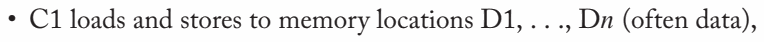
数学符号与上下标以此原版面为准中文• C1对内存位置D1、…、Dn执行 load 与 store，这些位置通常保存数据；
ENGLISH• C1 stores to F (often a synchronization flag) to indicate that the above work is complete,
中文• C1向F执行 store，表示上述工作完成，F通常是同步标志；
查看 原书第 41 页 的完整原版面（PDF 63）
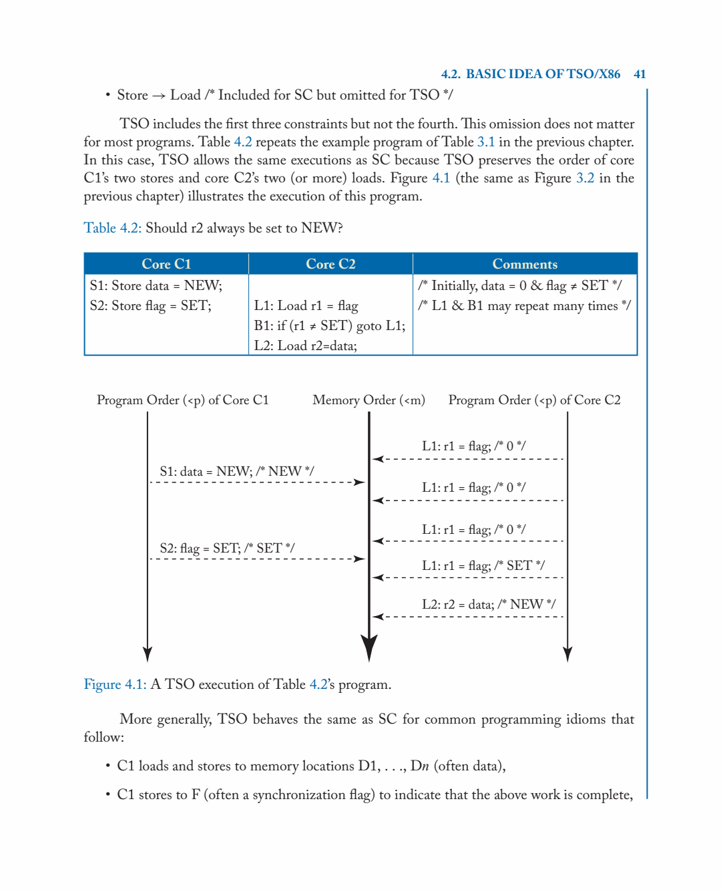
原书第 42 页PDF 64
ENGLISH• C2 loads from F to observe the above work is complete (sometimes spinning first and often using a RMW instruction), and
中文• C2从F load，观察上述工作已经完成；有时先自旋等待，并常使用RMW指令；
ENGLISH• C2 loads and stores to some or all of the memory locations D1, . . ., Dn.

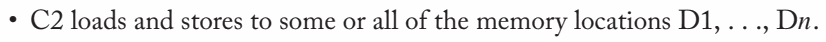
数学符号与上下标以此原版面为准中文• C2对D1、…、Dn中的部分或全部内存位置执行 load 和 store。
ENGLISHTSO, however, allows some non-SC executions. Under TSO, the program from Table 4.1 (repeat of Table 3.3 from the last chapter) allows all four outcomes depicted in Figure 4.2. Under SC, only the first three are legal outcomes (as depicted in Figure 3.3 of the last chapter). The execution in Figure 4.2d illustrates an execution that conforms to TSO but violates SC by not honoring the fourth (i.e., Store Load) constraint. Omitting the fourth constraint allows each ! core to use a write buffer. Note that the third constraint means that the write buffer must be FIFO (and not, for example, coalescing) to preserve store–store order.

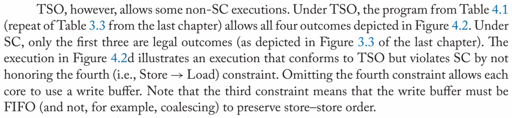
数学符号与上下标以此原版面为准中文不过，TSO确实允许某些非SC执行。对于表4.1的程序，也就是上一章表3.3的程序，TSO允许图4.2中的全部四种结果。SC则只允许前三种，如上一章图3.3所示。图4.2d的执行遵守TSO，但因不遵守第四项约束，即 store→load 顺序，而违反SC。省略第四项约束使每个核都能使用写缓冲区。注意，第三项约束要求写缓冲区采用FIFO方式，而不能例如任意合并 store，以保持 store—store 顺序。
ENGLISHProgrammers (or compilers) can prevent the execution in Figure 4.2d by inserting a FENCE instruction between S1 and L1 on core C1 and between S2 and L2 on core C2. Executing a FENCE on core Ci ensures that Ci’s memory operations before the FENCE (in program order) get placed in memory order before Ci’s memory operations after the FENCE. FENCEs (a.k.a. memory barriers) are rarely used by programmers using TSO because TSO “does the right thing” for most programs. Nevertheless, FENCEs play an important role for the relaxed models discussed in the next chapter.
中文程序员或编译器可在C1的S1与L1之间，以及C2的S2与L2之间插入FENCE指令，阻止图4.2d的执行。核Ci执行FENCE后，可以确保按程序顺序位于FENCE之前的Ci内存操作，在内存顺序中先于FENCE之后的Ci内存操作。使用TSO时，程序员很少需要FENCE，也称内存屏障，因为TSO对大多数程序都能给出预期行为。然而，在下一章的宽松模型中，FENCE将发挥重要作用。
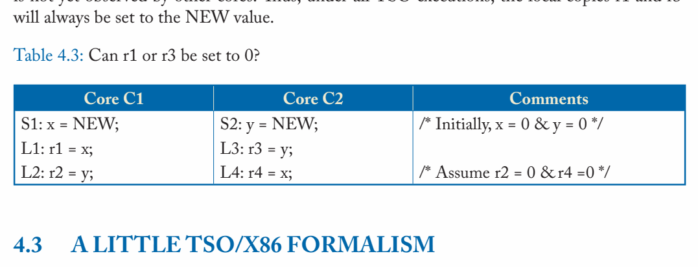
ENGLISHTSO does allow some non-intuitive execution results. Table 4.3 illustrates a modified version of the program in Table 4.1 in which cores C1 and C2 make local copies of x and y, respectively. Many programmers might assume that if both r2 and r4 equal 0, then r1 and r3 should also be 0 because the stores S1 and S2 must be inserted into memory order after the loads L2 and L4. However, Figure 4.3 illustrates an execution that shows r1 and r3 bypassing the value NEW from the per-core write buffers. In fact, to preserve single-thread sequential semantics, each core must see the effect of its own store in program order, even though the store is not yet observed by other cores. Thus, under all TSO executions, the local copies r1 and r3 will always be set to the NEW value.
中文TSO允许一些不直观的结果。表4.3修改了表4.1的程序，让C1和C2分别生成x和y的本地副本。许多程序员可能认为，如果r2和r4都为0，则r1和r3也应为0，因为S1和S2必须在L2和L4之后插入内存顺序。然而，图4.3显示，r1和r3可以通过旁路从各核写缓冲区取得NEW。事实上，为保持单线程顺序语义，每个核必须按程序顺序看到自身 store 的效果，即使其他核尚未观察到该 store。因此，在所有TSO执行中，本地副本r1和r3始终为NEW。
展开可搜索的英文文字
Core C1 Core C2 Comments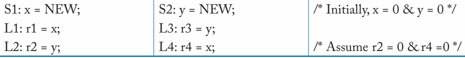
展开可搜索的英文文字
S1: x = NEW; S2: y = NEW; /* Initially, x = 0 & y = 0 */ L1: r1 = x; L3: r3 = y; L2: r2 = y; L4: r4 = x; /* Assume r2 = 0 & r4 = 0 */ENGLISH4.3 A LITTLE TSO/X86 FORMALISM
中文4.3 TSO/x86的简要形式化描述
ENGLISHIn this section we define TSO more precisely with a definition that makes only three changes to the SC definition of Section 3.5.
中文本节更精确地定义TSO。相比3.5节的SC定义，只需进行三处修改。
查看 原书第 42 页 的完整原版面（PDF 64）
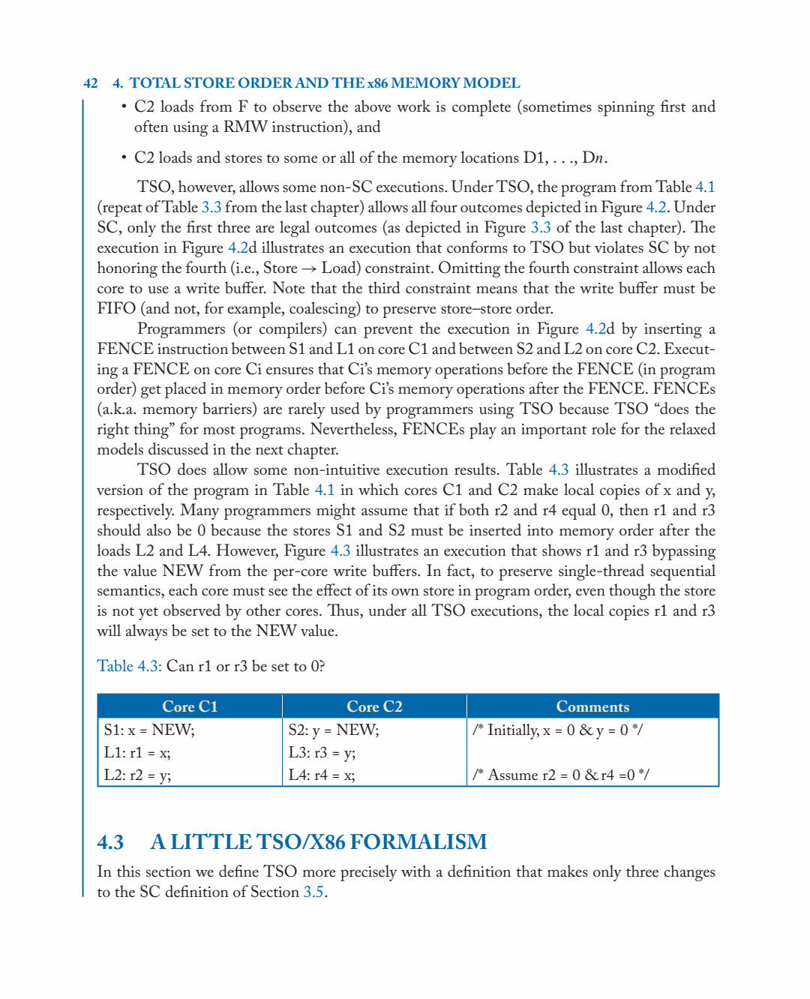
原书第 43 页PDF 65
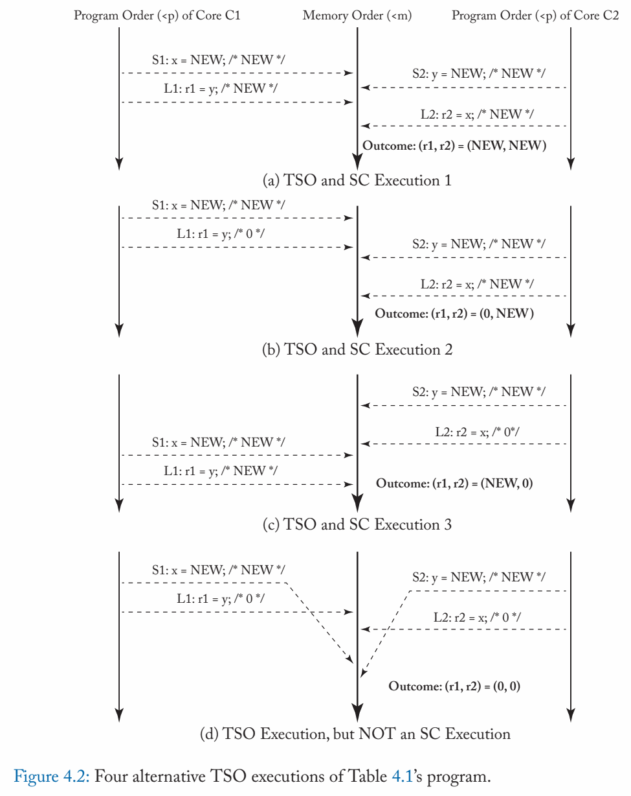
查看 原书第 43 页 的完整原版面（PDF 65）
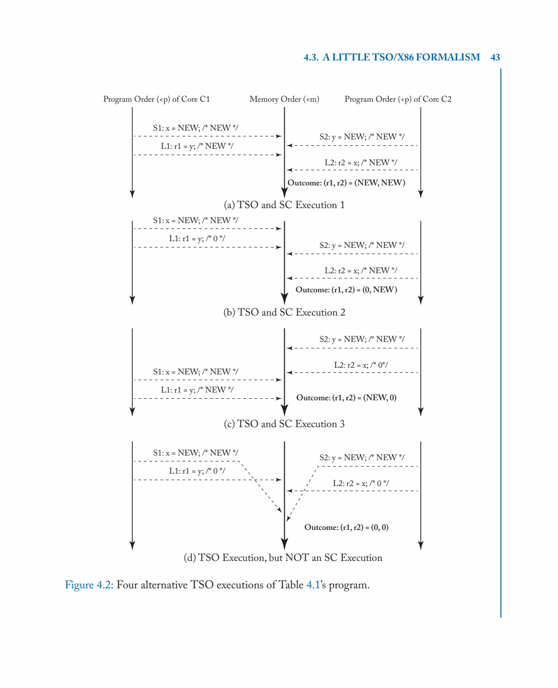
原书第 44 页PDF 66
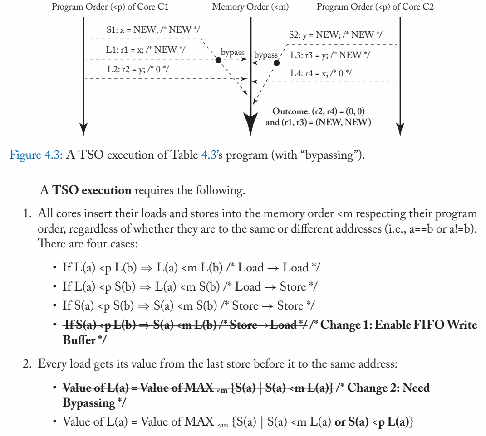
ENGLISHA TSO execution requires the following.
中文TSO执行要求满足以下条件。
ENGLISH1. All cores insert their loads and stores into the memory order <m respecting their program order, regardless of whether they are to the same or different addresses (i.e., a==b or a!=b). There are four cases:
中文1. 各核按照以下约束，将 load 与 store 插入内存顺序<m，无论它们访问相同地址还是不同地址，即a == b或a != b。四种情形如下：

中文• 若L(a) <p L(b)，则L(a) <m L(b)。/* load→load */

中文• 若L(a) <p S(b)，则L(a) <m S(b)。/* load→store */

中文• 若S(a) <p S(b)，则S(a) <m S(b)。/* store→store */
ENGLISH• If S(a) <p L(b) S(a) <m L(b) /* Store Load */ /* Change 1: Enable FIFO Write ) ! Buffer */

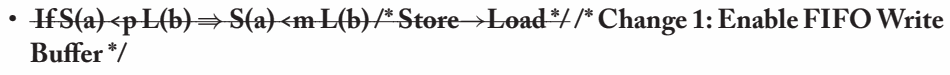
数学符号与上下标以此原版面为准中文• 删除SC中的规则“若S(a) <p L(b)，则S(a) <m L(b)”。/* store→load；修改1：允许FIFO写缓冲区。原页以删除线表示移除此约束。*/
ENGLISH2. Every load gets its value from the last store before it to the same address:
中文2. 每次 load 取得对同一地址的最近一次 store 值：
ENGLISH• Value of L(a) = Value of MAX {S(a) | S(a) <m L(a)} /* Change 2: Need <m Bypassing */
中文• 原SC规则：Value of L(a) = Value of MAX_<m {S(a) | S(a) <m L(a)}。/* 修改2：需要旁路转发，因此用下式替换。*/
ENGLISH• Value of L(a) = Value of MAX {S(a) | S(a) <m L(a) or S(a) <p L(a)} <m
中文• Value of L(a) = Value of MAX_<m {S(a) | S(a) <m L(a) 或 S(a) <p L(a)}。
ENGLISHThis last mind-bending equation says that the value of a load is the value of the last store to the same address that is either (a) before it in memory order or (b) before it in program order (but possibly after it in memory order), with option (b) taking precedence (i.e., write buffer bypassing overrides the rest of the memory system).
中文这个不太直观的式子表示：load 的值来自对同一地址的最后一次 store，而该 store 满足以下至少一项：（a）在内存顺序中先于 load；（b）在程序顺序中先于 load，但在内存顺序中可能位于 load 之后。选项（b）优先，也就是写缓冲区旁路值优先于内存系统其余部分提供的值。
ENGLISH3. Part (1) must be augmented to define FENCEs: /* Change 3: FENCEs Order Everything */
中文3. 需要扩展第1项，以定义FENCE。/* 修改3：FENCE对所有操作保证顺序。*/

中文• 若L(a) <p FENCE，则L(a) <m FENCE。/* load→FENCE */

中文• 若S(a) <p FENCE，则S(a) <m FENCE。/* store→FENCE */

中文• 若FENCE₁ <p FENCE₂，则FENCE₁ <m FENCE₂。/* FENCE→FENCE */
查看 原书第 44 页 的完整原版面（PDF 66）
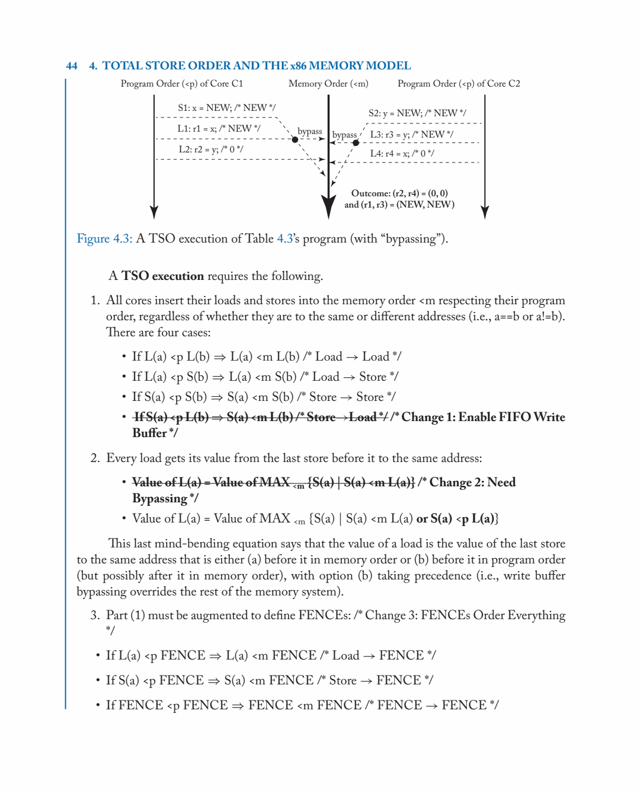
原书第 45 页PDF 67

中文• 若FENCE <p L(a)，则FENCE <m L(a)。/* FENCE→load */
ENGLISH• If FENCE <p S(a) FENCE <m S(a) /* FENCE Store */ ) ! Because TSO already requires all but the Store Load order, one can alternatively define ! TSO FENCEs as only ordering:

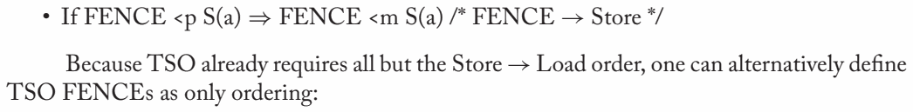
数学符号与上下标以此原版面为准中文• 若FENCE <p S(a)，则FENCE <m S(a)。/* FENCE→store */
由于TSO已经要求除 store→load 以外的所有顺序，也可以将TSO中的FENCE定义为仅保证以下顺序：
由于TSO已经要求除 store→load 以外的所有顺序，也可以将TSO中的FENCE定义为仅保证以下顺序：

中文• 若S(a) <p FENCE，则S(a) <m FENCE。/* store→FENCE */
ENGLISH• If FENCE <p L(a) FENCE <m L(a) /* FENCE Load */ ) ! We choose to have TSO FENCEs redundantly order everything because doing so does not hurt and makes them like the FENCEs we define for more relaxed models in the next chapter.

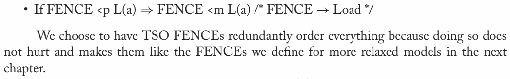
数学符号与上下标以此原版面为准中文• 若FENCE <p L(a)，则FENCE <m L(a)。/* FENCE→load */
我们仍选择让TSO的FENCE冗余地对所有操作保证顺序，因为这没有坏处，而且能使其与下一章更宽松模型中的FENCE定义保持一致。
我们仍选择让TSO的FENCE冗余地对所有操作保证顺序，因为这没有坏处，而且能使其与下一章更宽松模型中的FENCE定义保持一致。
ENGLISHWe summarize TSO’s ordering rules in Table 4.4. This table has two important differences from the analogous table for SC (Table 3.4). First, if Operation #1 is a store and Operation #2 is a load, the entry at that intersection is a “B” instead of an “X”; if these operations are to the same address, the load must obtain the value just stored even if the operations enter memory order out of program order. Second, the table includes FENCEs, which were not necessary in SC; an SC system behaves as if there is already a FENCE before and after every operation.
中文表4.4汇总TSO的顺序规则。它与SC对应的表3.4有两个重要区别。第一，操作1为 store、操作2为 load 时，单元格是“B”而非“X”；如果两操作访问相同地址，即使它们不按程序顺序进入内存顺序，load 也必须取得刚刚 store 的值。第二，表中加入了FENCE；SC不需要FENCE，因为SC系统表现为每个操作之前和之后都已存在一个FENCE。
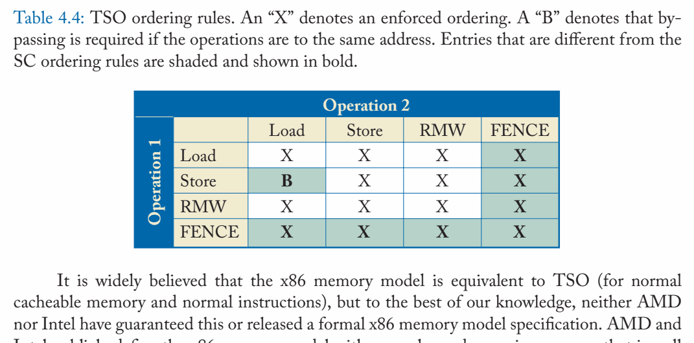
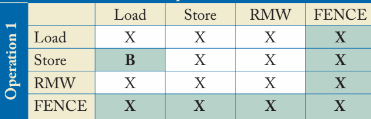
展开可搜索的英文文字
1 noitarepO Load Store RMW FENCE Load X X X X Store B X X X RMW X X X X FENCE X X X XENGLISHIt is widely believed that the x86 memory model is equivalent to TSO (for normal cacheable memory and normal instructions), but to the best of our knowledge, neither AMD nor Intel have guaranteed this or released a formal x86 memory model specification. AMD and Intel publicly define the x86 memory model with examples and prose in a process that is well summarized in Section 2 of Sewell et al. [15]. All examples conform to TSO, and all prose seems consistent with TSO. This equivalence can be proven only if a public, formal description of the x86 memory model were made available. This equivalence could be disproved if counterexample(s) showed an x86 execution not allowed by TSO, a TSO execution not allowed by x86, or both.
中文普遍观点认为，对于普通可缓存内存和普通指令，x86内存模型等价于TSO。但据作者所知，AMD和Intel都没有对此作出保证，也没有公布形式化的x86内存模型规范。AMD和Intel通过示例与自然语言公开定义x86内存模型，Sewell等人[15]的第2节很好地总结了这一过程。所有示例均符合TSO，所有文字描述也似乎与TSO一致。只有公开、形式化的x86内存模型描述出现后，才可能证明这种等价性。若存在反例，显示x86允许TSO禁止的执行，或TSO允许x86禁止的执行，或者两者兼有，则可以否定等价性。
查看 原书第 45 页 的完整原版面（PDF 67）
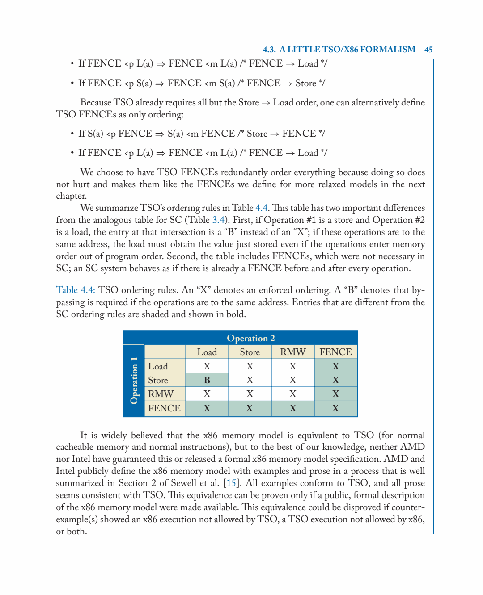
原书第 46 页PDF 68
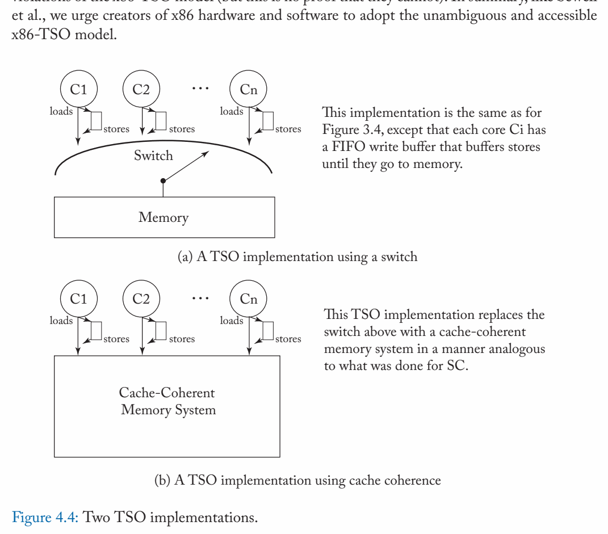
ENGLISHThat x86 is equivalent to TSO is supported by Sewell et al. [15], summarized in CACM with more details elsewhere [9, 14]. In particular, the authors propose the x86-TSO model. The model has two forms that the authors prove equivalent. The first form provides an abstract machine that resembles Figure 4.4a of the next section with the addition of a single global lock for modeling x86 LOCK’d instructions. The second form is a labeled transition system. The first form makes the model accessible to practitioners while the latter eases formal proofs. On one hand, x86-TSO appears consistent with the informal rules and litmus tests in x86 specifications. On the other hand, empirical tests on several AMD and Intel platforms did not reveal any violations of the x86-TSO model (but this is no proof that they cannot). In summary, like Sewell et al., we urge creators of x86 hardware and software to adopt the unambiguous and accessible x86-TSO model.
中文Sewell等人[15]的工作支持x86等价于TSO这一观点，其概要发表于CACM，更多细节见[9, 14]。作者提出x86-TSO模型，并证明该模型的两种形式等价。第一种是抽象机，类似下一节图4.4a，但增加一个全局锁以描述带LOCK前缀的x86指令；第二种是带标签转换系统。前者便于实践者理解，后者便于形式化证明。一方面，x86-TSO似乎符合x86规范中的非形式化规则和试金石测试；另一方面，对若干AMD和Intel平台的实测未发现违反x86-TSO的情况，但这并不能证明违规不可能发生。因此，与Sewell等人一样，我们建议x86软硬件设计者采用无歧义且易理解的x86-TSO模型。
查看 原书第 46 页 的完整原版面（PDF 68）
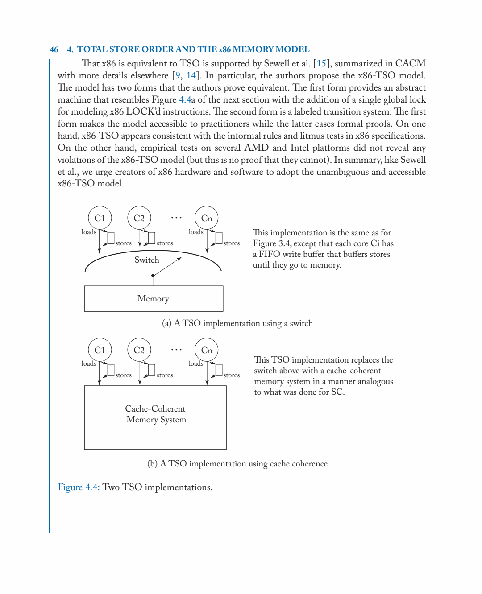
原书第 47 页PDF 69
ENGLISH4.4 IMPLEMENTING TSO/X86
中文4.4 实现TSO/x86
ENGLISHThe implementation story for TSO/x86 is similar to SC with the addition of per-core FIFO write buffers. Figure 4.4a updates the switch of Figure 3.4 to accommodate TSO and operates as follows.
中文TSO/x86的实现与SC类似，只需为每个核增加FIFO写缓冲区。图4.4a修改图3.4的交换开关模型以支持TSO，其工作方式如下。
ENGLISH• Loads and stores leave each core in that core’s program order <p.
中文• load 和 store 按各核的程序顺序<p离开该核。
ENGLISH• A load either bypasses a value from the write buffer or awaits the switch as before.
中文• load 要么从写缓冲区旁路取得值，要么像以前一样等待交换开关。
ENGLISH• A store enters the tail of the FIFO write buffer or stalls the core if the buffer is full.
中文• store 进入FIFO写缓冲区的尾部；若缓冲区已满，则使核停顿。
ENGLISH• When the switch selects core Ci, it performs either the next load or the store at the head of the write buffer.
中文• 交换开关选中核Ci时，执行其下一次 load，或者写缓冲区头部的 store。
ENGLISHIn Section 3.7, we showed that, for SC, the switch can be replaced by a cache coherent memory system and then argued that cores could be speculative and/or multithreaded and that nonbinding prefetches could be initiated by cores, caches, or software.
中文3.7节说明，在SC中可以用支持缓存一致性的内存系统替代交换开关；随后说明核可以支持推测执行和／或多线程，而非绑定预取可以由核、缓存或软件发起。
ENGLISHAs illustrated in Figure 4.4b, the same argument holds for TSO with a FIFO writer buffer interposed between each core and the cache-coherent memory system. Thus, aside from the write buffer, all the previous SC implementation discussion holds for TSO and provides a way to build TSO implementations. Moreover, most current TSO implementations seem to use only the above approach: take an SC implementation and insert write buffers.
中文如图4.4b所示，在每个核与支持缓存一致性的内存系统之间插入FIFO写缓冲区后，同样的论证也适用于TSO。因此，除写缓冲区外，前文关于SC实现的全部讨论均适用于TSO，并给出了构建TSO实现的方法。此外，当前大多数TSO实现似乎正是采用这一方案：以SC实现为基础，加入写缓冲区。
ENGLISHRegarding the write buffer, the literature and product space for how exactly speculative cores implement them is beyond the scope of this chapter. For example, microarchitectures can physically combine the store queue (uncommitted stores) and write buffer (committed stores), and/or physically separate load and store queues.
中文关于推测执行核究竟如何实现写缓冲区，相关文献和产品设计超出本章范围。例如，微体系结构可在物理上合并 store 队列（未提交 store）与写缓冲区（已提交 store），也可以在物理上分离 load 队列和 store 队列。
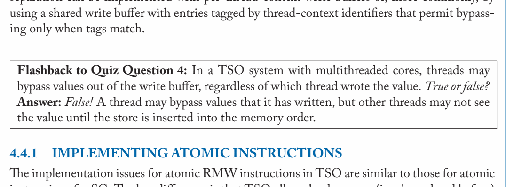
ENGLISHFinally, multithreading introduces a subtle write buffer issue for TSO. TSO write buffers are logically private to each thread context (virtual core). Thus, on a multithreaded core, one thread context should never bypass from the write buffer of another thread context. This logical separation can be implemented with per-thread-context write buffers or, more commonly, by using a shared write buffer with entries tagged by thread-context identifiers that permit bypassing only when tags match.
中文最后，多线程给TSO带来一个细微的写缓冲区问题。TSO写缓冲区在逻辑上属于各个线程上下文，即虚拟核的私有资源。因此，在多线程核上，一个线程上下文绝不能从另一个线程上下文的写缓冲区旁路取值。可以为每个线程上下文设置独立写缓冲区，或者更常见地，使用共享写缓冲区，并为各项添加线程上下文标识；只有标识匹配时才允许旁路。
ENGLISHFlashback to Quiz Question 4: In a TSO system with multithreaded cores, threads may bypass values out of the write buffer, regardless of which thread wrote the value. True or false? Answer: False! A thread may bypass values that it has written, but other threads may not see the value until the store is inserted into the memory order.
中文回顾测验问题4：在具有多线程处理器核的TSO系统中，无论某个值由哪个线程写入，线程都可以从写缓冲区旁路取得该值。对还是错？答案：错！线程可以旁路取得自己写入的值，但其他线程只有在该 store 插入内存顺序之后，才能看到该值。
ENGLISH4.4.1 IMPLEMENTING ATOMIC INSTRUCTIONS The implementation issues for atomic RMW instructions in TSO are similar to those for atomic instructions for SC. The key difference is that TSO allows loads to pass (i.e., be ordered before)
中文4.4.1 原子指令的实现
TSO中的原子RMW指令，与SC中的原子指令面临类似实现问题。主要区别在于，TSO允许 load 越过，也就是在顺序上先于
TSO中的原子RMW指令，与SC中的原子指令面临类似实现问题。主要区别在于，TSO允许 load 越过，也就是在顺序上先于
查看 原书第 47 页 的完整原版面（PDF 69）
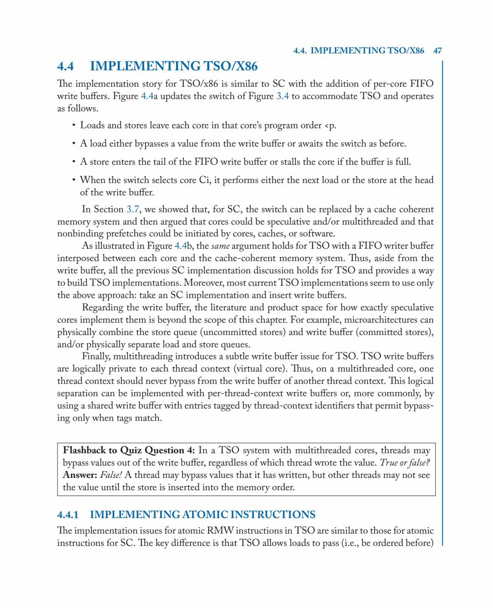
原书第 48 页PDF 70
ENGLISHearlier stores that have been written to a write buffer. The impact on RMWs is that the “write” (i.e., store) may be written to the write buffer.
中文已经进入写缓冲区的较早 store。对RMW的影响是，其“写”部分，也就是 store，可能被写入写缓冲区。
ENGLISHTo understand the implementation of atomic RMWs in TSO, we consider the RMW as a load immediately followed by a store.
中文为理解TSO中原子RMW的实现，将RMW看作一次 load 紧接一次 store。
ENGLISHThe load part of the RMW cannot pass earlier loads due to TSO’s ordering rules. It might at first appear that the load part of the RMW could pass earlier stores in the write buffer, but this is not legal. If the load part of the RMW passes an earlier store, then the store part of the RMW would also have to pass the earlier store because the RMW is an atomic pair. But because stores are not allowed to pass each other in TSO, the load part of the RMW cannot pass an earlier store either.
中文根据TSO顺序规则，RMW的 load 部分不能越过较早的 load。初看之下，它似乎可以越过写缓冲区中较早的 store，但这并不合法。如果 load 部分越过较早 store，由于RMW是一对原子操作，其 store 部分也必须越过该 store。然而，TSO不允许 store 彼此越过，因此RMW的 load 部分也不能越过较早 store。
ENGLISHThese ordering constraints on RMWs impact the implementation. Because the load part of the RMW cannot be performed until earlier stores have been ordered (i.e., exited the write buffer), the atomic RMW effectively drains the write buffer before it can perform the load part of the RMW. Furthermore, to ensure that the store part can be ordered immediately after the load part, the load part requires read-write coherence permissions, not just the read permissions that suffice for normal loads. Lastly, to guarantee atomicity for the RMW, the cache controller may not relinquish coherence permission to the block between the load and the store.
中文这些顺序约束会影响实现。在较早 store 完成排序，也就是离开写缓冲区之前，RMW的 load 部分不能执行。因此，原子RMW实际上必须先排空写缓冲区，才能执行 load 部分。此外，为确保 store 部分能够紧随 load 部分进入顺序，load 部分就需要读写缓存一致性权限，而不仅是普通 load 所需的读权限。最后，为保证RMW原子性，缓存控制器在 load 与 store 之间不得放弃该块的一致性权限。
ENGLISHMore optimized implementations of RMWs are possible. For example, the write buffer does not need to be drained as long as (a) every entry already in the write buffer has read-write permission in the cache and maintains the read-write permission in the cache until the RMW commits, and (b) the core performs MIPS R10000-style checking of load speculation (Section 3.8). Logically, all of the earlier stores and loads would then commit as a unit (sometimes called a “chunk”) immediately before the RMW.
中文也可以采用更优化的RMW实现。例如，只要（a）写缓冲区中已有的每个表项对应块都已获得读写权限，并一直保持至RMW提交；且（b）核采用MIPS R10000式的 load 推测检查（3.8节），就无须先排空写缓冲区。在逻辑上，这些较早的 store 和 load 作为一个整体，有时称为“指令块”，紧接在RMW之前提交。
ENGLISH4.4.2 IMPLEMENTING FENCES Systems that support TSO do not provide ordering between a store and a subsequent (in program order) load, although they do require the load to get the value of the earlier store. In situations in which the programmer wants those instructions to be ordered, the programmer must explicitly specify that ordering by putting a FENCE instruction between the store and the subsequent load. The semantics of the FENCE specify that all instructions before the FENCE in program order must be ordered before any instructions after the FENCE in program order. For systems that support TSO, the FENCE thus prohibits a load from bypassing an earlier store. In Table 4.5, we revisit the example from Table 4.1, but we have added two FENCE instructions that were not present earlier. Without these FENCEs, the two loads (L1 and L2) can bypass the two stores (S1 and S2), leading to an execution in which r1 and r2 both get set to zero. The added FENCEs prohibit that reordering and thus prohibit that execution.
中文4.4.2 FENCE的实现
支持TSO的系统不保证 store 与程序顺序中后续 load 之间的顺序；但如果二者访问同一地址，仍要求 load 取得较早 store 的值。若程序员希望保证这些指令的顺序，就必须在 store 与后续 load 之间插入FENCE。FENCE的语义要求，程序顺序中位于它之前的所有指令，都排在其后所有指令之前。因此，在TSO系统中，FENCE阻止 load 越过较早 store。表4.5再次给出表4.1的示例，但新增了两个FENCE。没有它们时，L1和L2可以越过S1和S2，使r1和r2均为0。新增FENCE禁止该重排，也就禁止这一执行结果。
支持TSO的系统不保证 store 与程序顺序中后续 load 之间的顺序；但如果二者访问同一地址，仍要求 load 取得较早 store 的值。若程序员希望保证这些指令的顺序，就必须在 store 与后续 load 之间插入FENCE。FENCE的语义要求，程序顺序中位于它之前的所有指令，都排在其后所有指令之前。因此，在TSO系统中，FENCE阻止 load 越过较早 store。表4.5再次给出表4.1的示例，但新增了两个FENCE。没有它们时，L1和L2可以越过S1和S2，使r1和r2均为0。新增FENCE禁止该重排，也就禁止这一执行结果。
ENGLISHBecause TSO permits only one type of reordering, FENCEs are fairly infrequent and the implementation of FENCE instructions is not too critical. A simple implementation—such as
中文由于TSO只允许一种重排，FENCE出现频率不高，因此其实现性能并非特别关键。一个简单实现，例如
查看 原书第 48 页 的完整原版面（PDF 70）
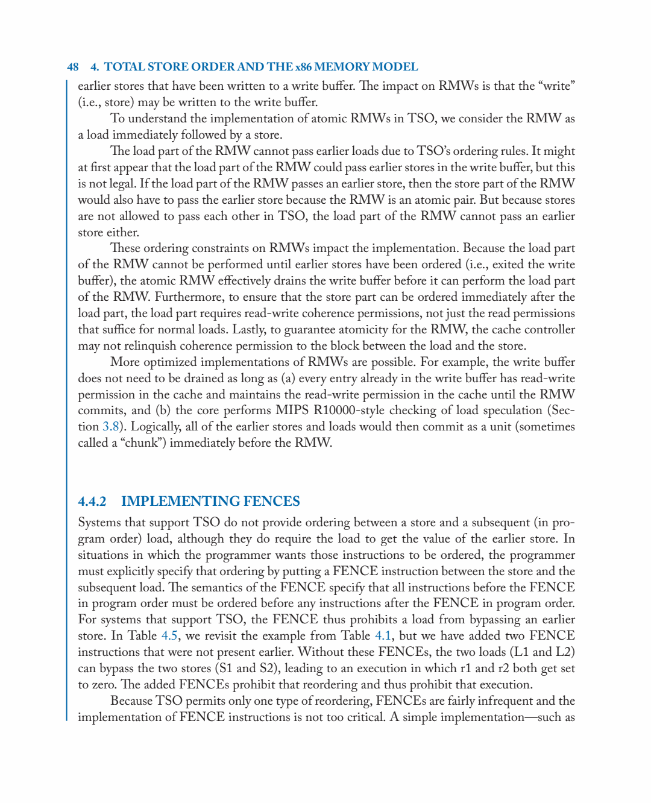
原书第 49 页PDF 71
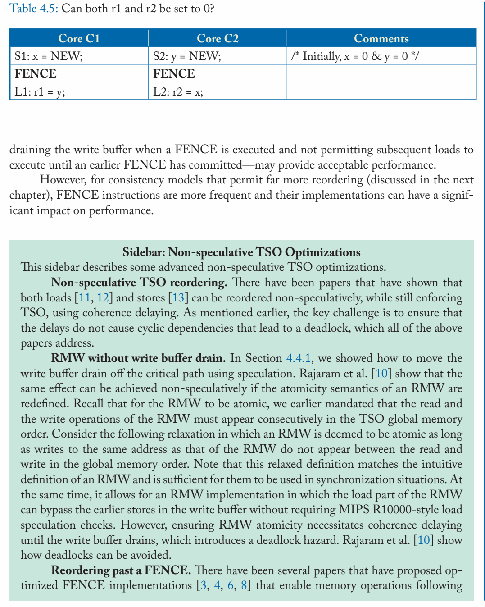
展开可搜索的英文文字
Core C1 Core C2 Comments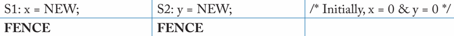
展开可搜索的英文文字
S1: x = NEW; S2: y = NEW; /* Initially, x = 0 & y = 0 */ FENCE FENCEENGLISHdraining the write buffer when a FENCE is executed and not permitting subsequent loads to execute until an earlier FENCE has committed—may provide acceptable performance. However, for consistency models that permit far more reordering (discussed in the next chapter), FENCE instructions are more frequent and their implementations can have a significant impact on performance.
中文执行FENCE时排空写缓冲区，并在该FENCE提交之前禁止后续 load 执行，就可能获得可接受的性能。然而，对于允许更多重排的一致性模型，下一章将讨论，FENCE会更频繁，其实现可能显著影响性能。
ENGLISHSidebar: Non-speculative TSO Optimizations This sidebar describes some advanced non-speculative TSO optimizations.
中文旁注：非推测式TSO优化
本旁注介绍若干高级非推测式TSO优化。
本旁注介绍若干高级非推测式TSO优化。
ENGLISHNon-speculative TSO reordering. There have been papers that have shown that both loads [11, 12] and stores [13] can be reordered non-speculatively, while still enforcing TSO, using coherence delaying. As mentioned earlier, the key challenge is to ensure that the delays do not cause cyclic dependencies that lead to a deadlock, which all of the above papers address.
中文非推测式TSO重排。已有论文表明，借助缓存一致性延迟，可以非推测地重排 load [11, 12]和 store [13]，同时仍保证TSO。前文提到，主要挑战是确保延迟不会产生导致死锁的循环依赖；上述论文均处理了这一问题。
ENGLISHRMW without write buffer drain. In Section 4.4.1, we showed how to move the write buffer drain off the critical path using speculation. Rajaram et al. [10] show that the same effect can be achieved non-speculatively if the atomicity semantics of an RMW are redefined. Recall that for the RMW to be atomic, we earlier mandated that the read and the write operations of the RMW must appear consecutively in the TSO global memory order. Consider the following relaxation in which an RMW is deemed to be atomic as long as writes to the same address as that of the RMW do not appear between the read and write in the global memory order. Note that this relaxed definition matches the intuitive definition of an RMW and is sufficient for them to be used in synchronization situations. At the same time, it allows for an RMW implementation in which the load part of the RMW can bypass the earlier stores in the write buffer without requiring MIPS R10000-style load speculation checks. However, ensuring RMW atomicity necessitates coherence delaying until the write buffer drains, which introduces a deadlock hazard. Rajaram et al. [10] show how deadlocks can be avoided.
中文无须排空写缓冲区的RMW。4.4.1节说明如何借助推测，将写缓冲区排空移出关键路径。Rajaram等人[10]表明，若重新定义RMW原子性语义，也可以非推测地实现同样效果。回顾前文，为使RMW具有原子性，我们要求它的读和写在TSO全局内存顺序中连续出现。现在考虑放松定义：只要在全局内存顺序中，RMW的读和写之间没有出现针对同一地址的写操作，就视为原子操作。这一宽松定义符合RMW的直观含义，也足以支持同步用途。同时，它允许RMW的 load 部分越过写缓冲区中的较早 store，而无须MIPS R10000式的 load 推测检查。不过，为保证RMW原子性，需要延迟缓存一致性处理，直到写缓冲区排空，因此引入死锁风险。Rajaram等人[10]说明了如何避免这些死锁。
ENGLISHReordering past a FENCE. There have been several papers that have proposed optimized FENCE implementations [3, 4, 6, 8] that enable memory operations following
中文跨越FENCE重排。若干论文[3, 4, 6, 8]提出优化的FENCE实现，使FENCE之后的内存操作
查看 原书第 49 页 的完整原版面（PDF 71）
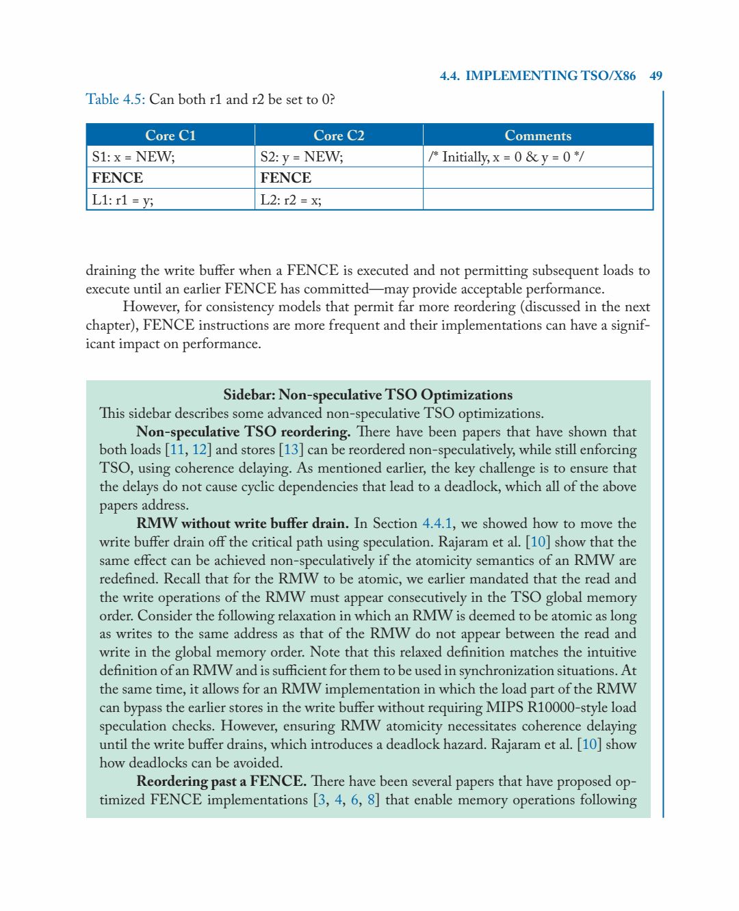
原书第 50 页PDF 72
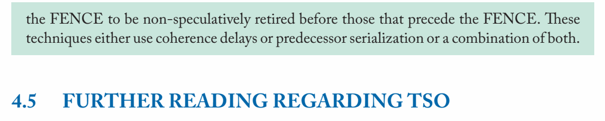
ENGLISHthe FENCE to be non-speculatively retired before those that precede the FENCE. These techniques either use coherence delays or predecessor serialization or a combination of both.
中文能够以非推测方式，在FENCE之前的操作完成前就退休。这些技术采用缓存一致性延迟、前驱串行化，或两者结合。
ENGLISH4.5 FURTHER READING REGARDING TSO
中文4.5 关于TSO的延伸阅读
ENGLISHCollier [2] characterized alternative memory consistency models, including that of the IBM System/370, via a model in which each core has a full copy of memory, its loads read from the local copy, and its writes update all copies according to some restrictions that define a model. Were TSO defined with this model, each store would write its own core’s memory copy immediately and then possibly later update all other memories together.
中文Collier[2]用一种模型描述了包括IBM System/370在内的不同内存一致性模型：每个核持有完整的内存副本，load 读取本地副本，写操作按规定该模型的某些约束更新全部副本。如果用这种方式定义TSO，则每个 store 立即写入本核的内存副本，随后可能在更晚时刻，一次性更新其余所有内存副本。
ENGLISHGoodman [7] publicly discussed the idea of processor consistency (PC), wherein a core’s stores reach other cores in order but do not necessarily reach other cores at the same “time.” Gharachorloo et al. [5] more precisely define PC. TSO and x86-TSO are special cases of PC in which each core sees its own store immediately, and when any other cores see a store, all other cores see it. This property is called write atomicity in the next chapter (Section 5.5).
中文Goodman[7]公开讨论了处理器一致性（PC）：一个核的 store 按顺序到达其他核，但不一定在同一“时刻”到达各核。Gharachorloo等人[5]对PC作出了更精确的定义。TSO和x86-TSO是PC的特例：每个核立即看到自身 store，而一旦某个其他核看到某 store，所有其他核就都能看到它。下一章将这一性质称为写原子性，参见5.5节。
ENGLISHTo the best of our knowledge, TSO was first formally defined by Sindhu et al. [16]. As discussed, in Section 4.3, Sewell et al. [9, 14, 15] propose and formalize the x86-TSO model that appears consistent with AMD and Intel x86 documentation and current implementations.
中文据作者所知，Sindhu等人[16]首次形式化定义了TSO。正如4.3节所述，Sewell等人[9, 14, 15]提出并形式化了x86-TSO模型，该模型似乎与AMD、Intel的x86文档及当时的实现一致。
ENGLISH4.6 COMPARING SC AND TSO
中文4.6 比较SC与TSO
ENGLISHNow that we have seen two memory consistency models, we can compare them. How do SC, TSO, etc., relate?
中文现在已经介绍两种内存一致性模型，可以对它们进行比较。SC、TSO等模型之间有什么关系？
ENGLISH• Executions: SC executions are a proper subset of TSO executions; all SC executions are TSO executions, while some TSO executions are SC executions and some are not. See the Venn diagram in Figure 4.5a.
中文• 执行：SC执行是TSO执行的真子集。全部SC执行都属于TSO执行；TSO执行中，有些属于SC，有些不属于。参见图4.5a的维恩图。
ENGLISH• Implementations: Implementations follow the same rules: SC implementations are a proper subset of TSO implementations. See Figure 4.5b, which is the same as Figure 4.5a.
中文• 实现：实现遵循相同关系。SC实现是TSO实现的真子集。图4.5b与图4.5a相同。
ENGLISHMore generally, a memory consistency model Y is strictly more relaxed (weaker) than a memory consistency model X if all X executions are also Y executions, but not vice versa. If Y is more relaxed than X, then it follows that all X implementations are also Y implementations. It is also possible that two memory consistency models are incomparable because both allow executions precluded by the other.
中文更一般地，若所有X执行都属于Y执行，而反之不成立，则称内存一致性模型Y严格宽松于，也就是弱于模型X。如果Y比X更宽松，则所有X实现也都是Y实现。两个模型也可能不可比较，因为它们各自都允许对方禁止的执行。
ENGLISHAs Figure 4.5 depicts, TSO is more relaxed than SC but less relaxed than incomparable models MC1 and MC2. In the next chapter, we will see candidates for MC1 and MC2, including a case study for the IBM Power memory consistency model.
中文如图4.5所示，TSO比SC宽松，但比彼此不可比较的MC1和MC2更严格。下一章将介绍可作为MC1与MC2的模型，包括IBM Power内存一致性模型案例。
查看 原书第 50 页 的完整原版面（PDF 72）
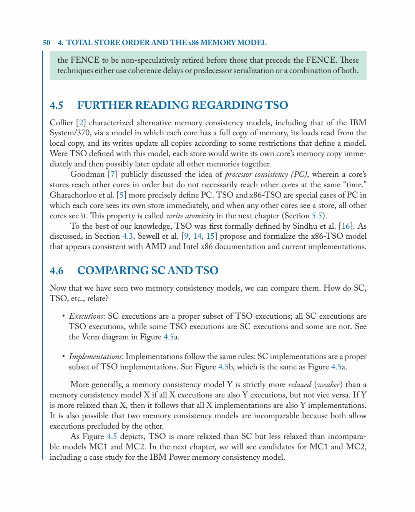
原书第 51 页PDF 73
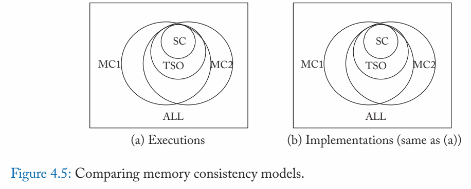
ENGLISHWhat is a Good Memory Consistency Model? A good memory consistency model should possess Sarita Adve’s 3Ps [1] plus our fourth P:
中文什么是好的内存一致性模型？
好的内存一致性模型应具备Sarita Adve提出的三个P[1]，再加上我们补充的第四个P：
好的内存一致性模型应具备Sarita Adve提出的三个P[1]，再加上我们补充的第四个P：
ENGLISH• Programmability: A good model should make it (relatively) easy to write multithreaded programs. The model should be intuitive to most users, even those who have not read the details. It should be precise, so that experts can push the envelope of what is allowed.
中文• 可编程性（Programmability）：应使编写多线程程序相对容易。对大多数用户，包括未阅读细节的用户，模型都应直观；同时又应足够精确，使专家能够充分利用允许行为的边界。
ENGLISH• Performance: A good model should facilitate high-performance implementations at reasonable power, cost, etc. It should give implementors broad latitude in options.
中文• 性能（Performance）：应支持在合理功耗、成本等约束下实现高性能，并给实现者广泛的设计选择空间。
ENGLISH• Portability: A good model would be adopted widely or at least provide backward compatibility or the ability to translate among models.
中文• 可移植性（Portability）：应得到广泛采用，或至少提供向后兼容性，或者能够在不同模型之间转换。
ENGLISH• Precision: A good model should be precisely defined, usually with mathematics. Natural languages are too ambiguous to enable experts to push the envelope of what is allowed.
中文• 精确性（Precision）：应有精确定义，通常借助数学。自然语言歧义太多，无法支撑专家充分利用允许行为的边界。
ENGLISHHow good are SC and TSO? Using these 4Ps:
中文依据这四个P，SC与TSO表现如何？
ENGLISH• Programmability: SC is the most intuitive. TSO is close because it acts like SC for common programming idioms. Nevertheless, subtle non-SC executions can bite programmers and tool authors.
中文• 可编程性：SC最直观。TSO与之接近，因为对常见编程方式，它表现得像SC。不过，细微的非SC执行仍可能给程序员和工具作者带来问题。
ENGLISH• Performance: For simple cores, TSO can offer better performance than SC, but the difference can be made small with speculation.
中文• 性能：对简单核而言，TSO可比SC获得更好性能；借助推测执行，二者差距可显著缩小。
ENGLISH• Portability: SC is widely understood, while TSO is widely adopted.
中文• 可移植性：SC被广泛理解，TSO被广泛采用。
ENGLISH• Precise: SC and TSO are formally defined.
中文• 精确性：SC与TSO均有形式化定义。
ENGLISHThe bottom line is that SC and TSO are pretty close, especially compared with the more complex and more relaxed memory consistency models discussed in the next chapter.
中文总体而言，SC与TSO十分接近，尤其相较于下一章更复杂、更宽松的内存一致性模型。
查看 原书第 51 页 的完整原版面（PDF 73）
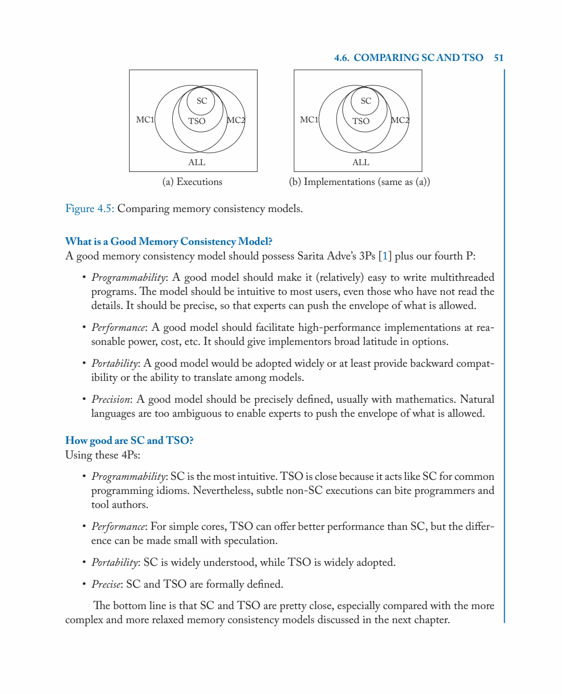
原书第 52 页PDF 74
ENGLISH4.7 REFERENCES
中文4.7 参考文献
ENGLISH[1] S. V. Adve. Designing memory consistency models for shared-memory multiprocessors. Ph.D. thesis, Computer Sciences Department, University of Wisconsin–Madison, November 1993. 51
中文[1] S. V. Adve.《共享内存多处理器的内存一致性模型设计》。博士学位论文，Computer Sciences Department, University of Wisconsin–Madison，1993年11月。引用页：51。
ENGLISH[2] W. W. Collier. Reasoning About Parallel Architectures. Prentice-Hall, Inc., 1990. 50
中文[2] W. W. Collier.《并行体系结构推理》。Prentice-Hall, Inc.，1990。引用页：50。
ENGLISH[3] Y. Duan, A. Muzahid, and J. Torrellas. WeeFence: Toward making fences free in TSO. In The 40th Annual International Symposium on Computer Architecture, 2013. DOI: 10.1145/2485922.2485941. 49
中文[3] Y. Duan、A. Muzahid、J. Torrellas.《WeeFence：迈向TSO中的零代价屏障》。The 40th Annual International Symposium on Computer Architecture，2013。DOI: 10.1145/2485922.2485941。引用页：49。
ENGLISH[4] Y. Duan, N. Honarmand, and J. Torrellas. Asymmetric memory fences: Optimizing both performance and implementability. In Proc. of the 20th International Conference on Architectural Support for Programming Languages and Operating Systems, 2015. DOI: 10.1145/2694344.2694388. 49
中文[4] Y. Duan、N. Honarmand、J. Torrellas.《非对称内存屏障：同时优化性能与可实现性》。Proc. of the 20th International Conference on Architectural Support for Programming Languages and Operating Systems，2015。DOI: 10.1145/2694344.2694388。引用页：49。
ENGLISH[5] K. Gharachorloo, D. Lenoski, J. Laudon, P. Gibbons, A. Gupta, and J. Hennessy. Memory consistency and event ordering in scalable shared-memory. In Proc. of the 17th Annual International Symposium on Computer Architecture, pp. 15–26, May 1990. DOI: 10.1109/isca.1990.134503. 50
中文[5] K. Gharachorloo、D. Lenoski、J. Laudon、P. Gibbons、A. Gupta、J. Hennessy.《可扩展共享内存中的内存一致性与事件排序》。Proc. of the 17th Annual International Symposium on Computer Architecture，15—26页，1990年5月。DOI: 10.1109/isca.1990.134503。引用页：50。
ENGLISH[6] K. Gharachorloo, M. Sharma, S. Steely, and S. Van Doren. Architecture and design of AlphaServer GS320. In Proc. of the 9th International Conference on Architectural Support for Programming Languages and Operating Systems, 2000. DOI: 10.1145/378993.378997. 49
中文[6] K. Gharachorloo、M. Sharma、S. Steely、S. Van Doren.《AlphaServer GS320的体系结构与设计》。Proc. of the 9th International Conference on Architectural Support for Programming Languages and Operating Systems，2000。DOI: 10.1145/378993.378997。引用页：49。
ENGLISH[7] J. R. Goodman. Cache consistency and sequential consistency. Technical Report 1006, Computer Sciences Department, University of Wisconsin–Madison, February 1991. 50
中文[7] J. R. Goodman.《缓存一致性与顺序一致性》。技术报告1006，Computer Sciences Department, University of Wisconsin–Madison，1991年2月。引用页：50。
ENGLISH[8] C. Lin, V. Nagarajan, and R. Gupta. Efficient sequential consistency using conditional fences. In 19th International Conference on Parallel Architectures and Compilation Techniques,
中文[8] C. Lin、V. Nagarajan、R. Gupta.《使用条件屏障高效实现顺序一致性》。19th International Conference on Parallel Architectures and Compilation Techniques，
ENGLISH2010. DOI: 10.1145/1854273.1854312. 49
中文2010。DOI: 10.1145/1854273.1854312。引用页：49。
ENGLISH[9] S. Owens, S. Sarkar, and P. Sewell. A better x86 memory model: x86-TSO. In Proc. of the Conference on Theorem Proving in Higher Order Logics, 2009. DOI: 10.1007/978-3-642- 03359-9_27. 46, 50
中文[9] S. Owens、S. Sarkar、P. Sewell.《更好的x86内存模型：x86-TSO》。Proc. of the Conference on Theorem Proving in Higher Order Logics，2009。DOI: 10.1007/978-3-642-03359-9_27。引用页：46、50。
ENGLISH[10] B. Rajaram, V. Nagarajan, S. Sarkar, and M. Elver. Fast RMWs for TSO: Semantics and implementation. In Proc. of ACM SIGPLAN Conference on Programming Language Design and Implementation, 2013. DOI: 10.1145/2491956.2462196. 49
中文[10] B. Rajaram、V. Nagarajan、S. Sarkar、M. Elver.《TSO中的快速RMW：语义与实现》。Proc. of ACM SIGPLAN Conference on Programming Language Design and Implementation，2013。DOI: 10.1145/2491956.2462196。引用页：49。
ENGLISH[11] A. Ros, T. E. Carlson, M. Alipour, and S. Kaxiras. Non-speculative load-load reordering in TSO. In Proc. of the 44th Annual International Symposium on Computer Architecture, 2017. DOI: 10.1145/3079856.3080220. 49
中文[11] A. Ros、T. E. Carlson、M. Alipour、S. Kaxiras.《TSO中的非推测 load—load 重排》。Proc. of the 44th Annual International Symposium on Computer Architecture，2017。DOI: 10.1145/3079856.3080220。引用页：49。
查看 原书第 52 页 的完整原版面（PDF 74）
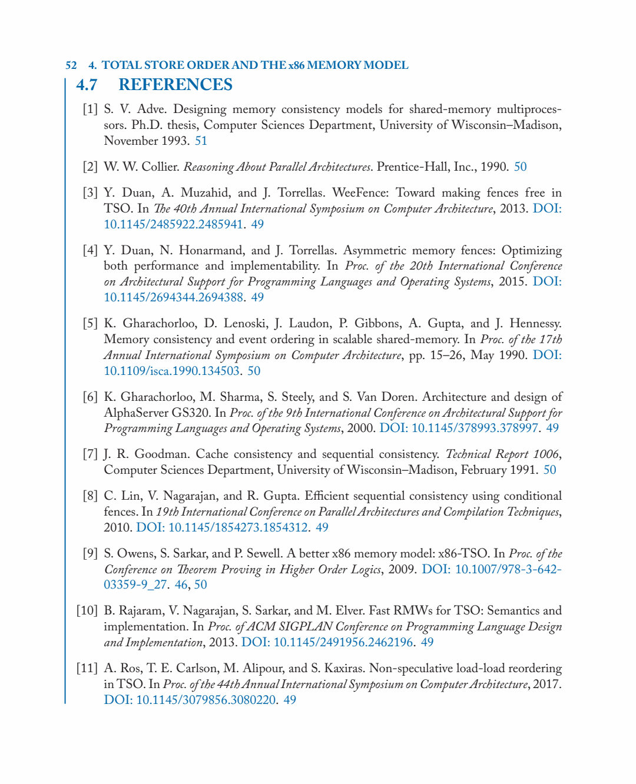
原书第 53 页PDF 75
ENGLISH[12] A. Ros and S. Kaxiras. The superfluous load queue. In 51st Annual IEEE/ACM International Symposium on Microarchitecture, 2018. DOI: 10.1109/micro.2018.00017. 49
中文[12] A. Ros、S. Kaxiras.《多余的 load 队列》。51st Annual IEEE/ACM International Symposium on Microarchitecture，2018。DOI: 10.1109/micro.2018.00017。引用页：49。
ENGLISH[13] A. Ros and S. Kaxiras. Non-speculative store coalescing in total store order. In 45th ACM/IEEE Annual International Symposium on Computer Architecture, 2018. DOI: 10.1109/isca.2018.00028. 49
中文[13] A. Ros、S. Kaxiras.《Total Store Order 中的非推测 store 合并》。45th ACM/IEEE Annual International Symposium on Computer Architecture，2018。DOI: 10.1109/isca.2018.00028。引用页：49。
ENGLISH[14] S. Sarkar, P. Sewell, F. Z. Nardelli, S. Owens, T. Ridge, T. Braibant, M. O. Myreen, and J. Alglave. The semantics of x86-CC multiprocessor machine code. In Proc. of the 36th Annual ACM SIGPLAN-SIGACT Symposium on Principles of Programming Languages, pp. 379– 391, 2009. DOI: 10.1145/1480881.1480929. 46, 50
中文[14] S. Sarkar、P. Sewell、F. Z. Nardelli、S. Owens、T. Ridge、T. Braibant、M. O. Myreen、J. Alglave.《x86-CC多处理器机器代码的语义》。Proc. of the 36th Annual ACM SIGPLAN-SIGACT Symposium on Principles of Programming Languages，379—391页，2009。DOI: 10.1145/1480881.1480929。引用页：46、50。
ENGLISH[15] P. Sewell, S. Sarkar, S. Owens, F. Z. Nardelli, and M. O. Myreen. x86-TSO: A rigorous and usable programmer’s model for x86 multiprocessors. Communications of the ACM, July
中文[15] P. Sewell、S. Sarkar、S. Owens、F. Z. Nardelli、M. O. Myreen.《x86-TSO：严谨且实用的x86多处理器程序员模型》。Communications of the ACM，
ENGLISH2010. DOI: 10.1145/1785414.1785443. 45, 46, 50
中文2010年7月。DOI: 10.1145/1785414.1785443。引用页：45、46、50。
ENGLISH[16] P. Sindhu, J.-M. Frailong, and M. Ceklov. Formal specification of memory models. Technical Report CSL-91–11, Xerox Palo Alto Research Center, December 1991. DOI: 10.1007/978-1-4615-3604-8_2. 50
中文[16] P. Sindhu、J.-M. Frailong、M. Ceklov.《内存模型的形式化规范》。技术报告CSL-91–11，Xerox Palo Alto Research Center，1991年12月。DOI: 10.1007/978-1-4615-3604-8_2。引用页：50。
查看 原书第 53 页 的完整原版面（PDF 75）
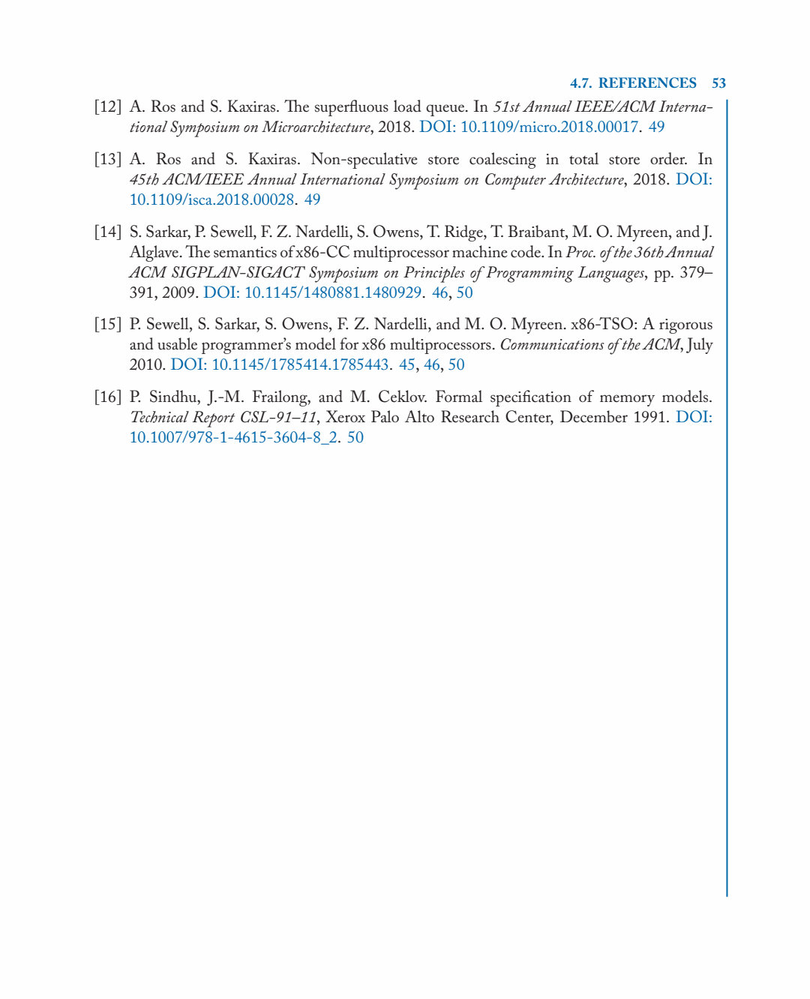